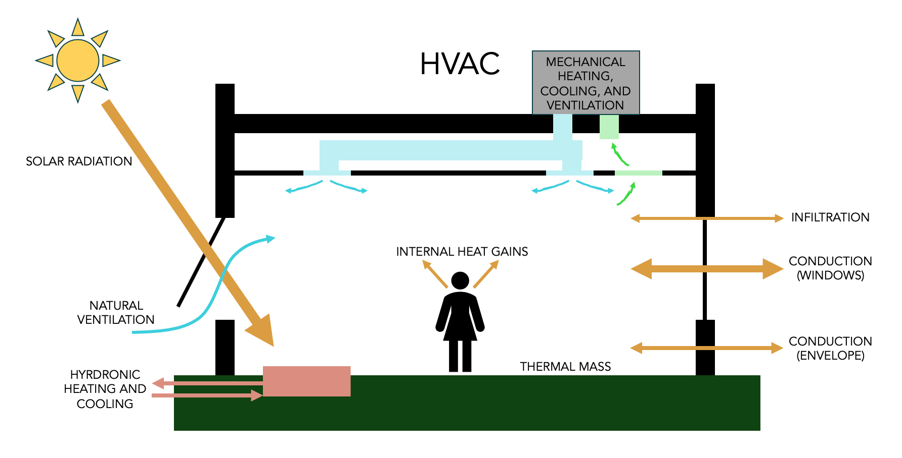
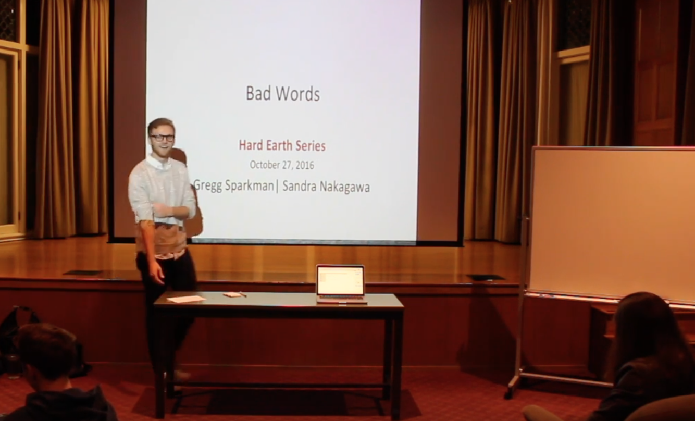
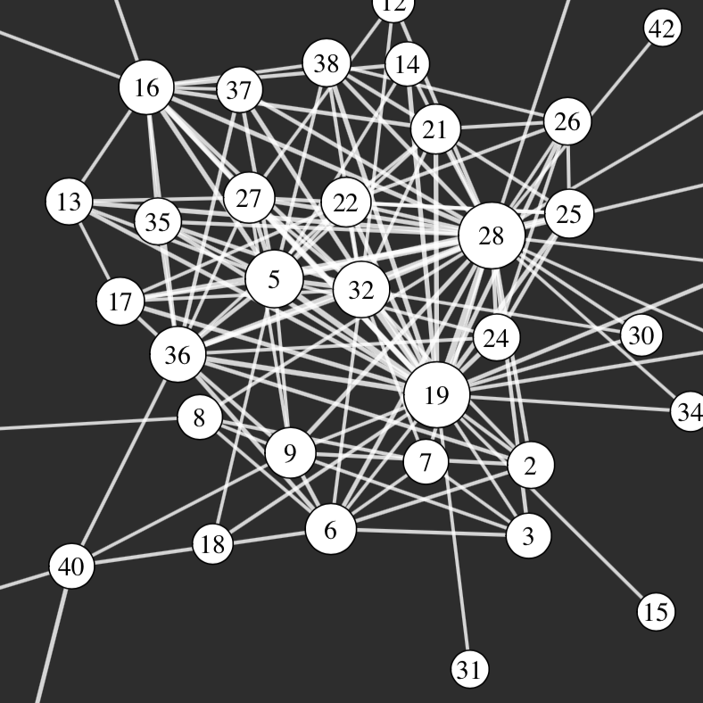

University of San Francisco
Autumn 2019
Environmental Control Systems

Environmental Control Systems in the Architecture and Community Development program at the University of San Francisco focuses on the passive and active ways we create comfortable building environments. In this course, we covered theory and used practical tools to evaluate designs. We explored sustainable heating, cooling, ventilation, and lighting systems.
Stanford University
Quarterly 2016 to 2018
Hard Earth Speaker Series

At Stanford, I developed seminar course called "Hard Earth: Graduate Student Talks Exploring Tough Environmental Dilemmas." The year-long course meets once a week and consists of public talks by graduate students that explore some of the most vexing questions having to do with environmental sustainability as well as discussion sessions with undergraduates and graduate students who enroll in the course.
Links:
Hard Earth Webpage
|
Stanford News Article
|
Course Blog
Stanford University
Winter 2017
Network Analysis for Urban Systems

I served as the teaching assistant the first offering of Professor Rishee Jain's course: CEE 245/345 Network Analysis for Urban Systems. The course aims to: 1) introduce students to the mathematical theory of networks and common metrics of networks; 2) develop an understanding of how to utilize network models to study urban systems; 3) provide an opportunity to apply network models to analyze a real urban system.
Stanford University
Quarterly 2016 to 2018
Stanford Splash: Desigining Cities of the Future
Along with other members of the Urban Informatics Lab, I co-taught a two-hour course that introduces data-driven urban design as part of the Stanford Splash program. The course is intended for high school students of all years, and it incorporates many of the ideas we often think about in our research.
Links:
Stanford Splash Webpage